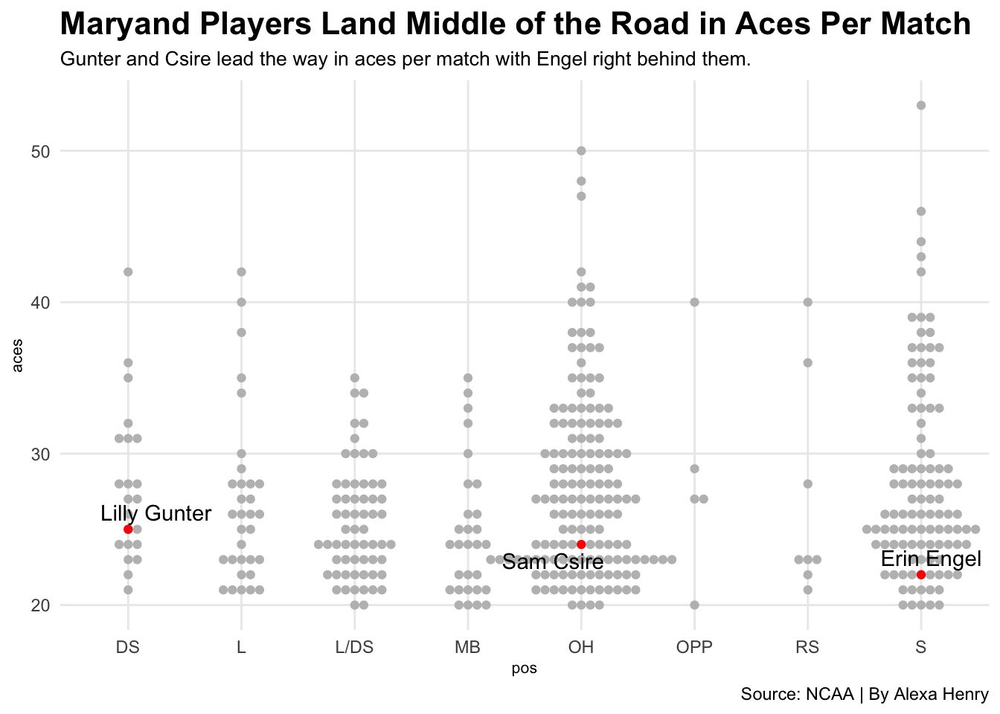

ggplot() +geom_beeswarm(data=vb20, groupOnX=TRUE, aes(x=pos, y=aces), color="grey") +geom_beeswarm(data=umd, groupOnX=TRUE, aes(x=pos, y=aces), color="red") +geom_text_repel(data=umd, aes(x=pos, y=aces, label=full_name)) +labs(title="Maryand Players Land Middle of the Road in Aces Per Match", subtitle="Gunter and Csire lead the way in aces per match with Engel right behind them.", caption="Source: NCAA | By Alexa Henry") +theme_minimal() +theme(plot.title =element_text(size =16, face ="bold"),axis.title =element_text(size =8), plot.subtitle =element_text(size=10), panel.grid.minor =element_blank() )
Warning: The `groupOnX` argument of `geom_beeswarm()` is deprecated as of ggbeeswarm
0.7.1.
ℹ ggplot2 now handles this case automatically.

Gunter and Csire are close to each other when it comes to aces per match with Engel just under them by a hair. However, they land in the middle of the road among other players like them. By position, Gunter lands among the few that are able to rack up aces per match which speaks to how valuable the transfer has been since coming from Mississippi State. Csire lands among the average side of the pack when it comes to aces per match. Again, it still speaks to how valuable she is but it does show that her numbers are common among peers like her. Engel, who is transitioning into more of a DS role on the team, lands more towards the bottom among setters. Her numbers can be better but she only comes into serve for the team because she is so affective behind the service line.